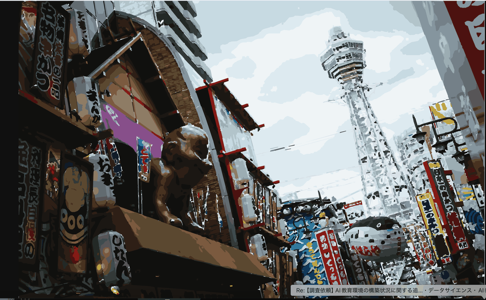

Turn a street in Osaka into a city of your own, using words alone. You will feel how fast this is, and where a small model stops being able to help.
In this part you see what happens when you let an AI write the code. The speed and the limits, both at once.
You will be able to take a page showing a street in Osaka and turn it into your own theme. Change colours, replace signs, draw new things. You will not write code yourself.
1 Say what you want
2 Take the code the AI produces
3 Paste it, save, look
4 Say what to change
That is all you do. Between step 2 and step 3, the one moving the code around is you. That is the difference with Part 3. Keep it in mind.
Vibe Coding is a term proposed by the AI researcher Andrej Karpathy in February 2025.
You do not follow the implementation details. You state what you want (the What). How to build it is left to the agent.
1 Describe what you want in words
2 The AI writes the code
3 Run it and look
4 Say what to fix
5 Repeat until it is right
Most people do Vibe Coding through a cloud service: ChatGPT, Claude, Gemini, GitHub Copilot, Cursor.
This course is different. The model runs on your own machine. No internet connection, no account, no billing.
| Model | qwen3.5:4b, running under Ollama |
| Editor | VS Code |
| Where you talk to it | Continue, inside VS Code |
| Material | A photograph of a street, converted into about 6,000 named shapes |
#tower. It should still be recognisable as the same placeSubmission goes through the peer evaluation system. Open Assignment 1: City remix (Osaka → Mumbai).
Register once at /register/ using an email you can read throughout the course. After that: Sign in → Assignment 1 → Submit → Preview. "Submitted" with a timestamp means it is saved. Submitting again overwrites the previous one. Keep a copy of what you submit.
| What | Note | |
|---|---|---|
| File | Your remixed shinsekai_remix.html, or a screenshot (PNG / JPG) |
1.5 MB maximum |
| Title | The theme of your work (shown to evaluators) | Optional field, but fill it in |
| Link | Your prompt log, on OneDrive or Google Drive | Optional field. Put it here |
shinsekai_remix.html is around 700 KB. Adding many shapes can push it past 1.5 MB.| Criterion | What is looked at |
|---|---|
| Theme clarity | Can you tell what city or scene it is? |
| Creativity | Is there an idea, or only a colour change? |
| Visual quality | Bad overlaps, shapes off the canvas? |
| Appeal | Does it hold your attention? |
Each is scored 0 to 3 by your classmates, with two short written answers: strongest point, and what could be improved.
On top of that, the instructor reads your prompt log. Where you got stuck, and how you recovered. A rough result with a record of how you narrowed the problem down still scores well. It says more than a pretty result produced in three prompts.
Submitting is not the end. From Start evaluating on the same card, you review the classmates assigned to you. Author names are hidden.
| How many | 7 |
| Time | 40 minutes. A few minutes each |
| Grading | Your evaluations are graded too |
demo_instructions.txt. Paste them into controls.txt to reproduce it.Two things you touch in this exercise, one line each.
| Role | |
|---|---|
| HTML | Says what exists. Gives things names |
| CSS | Says how they look. Names a thing and changes its colour or shape |
The street file works the same way. About 6,000 shapes live on the HTML side, each with a name. What you edit is the CSS side.
#sign-kushikatsu { fill: #e07b17; }
↑name ↑how it looksIf you can read that, you can do the exercise. A fuller explanation is in 2.3.10. It takes three minutes, so go there first if the line above means nothing to you.
| File | What it is |
|---|---|
shinsekai_remix.html | The street itself. About 700 KB. You edit two small regions of it |
controls.txt | Those two regions, extracted into one file. This is what you give the AI |
demo_indian_version.html | A worked example, for reference |
Inside shinsekai_remix.html there are exactly two places you may edit. The other 700 KB you leave alone.
| Where | What for | |
|---|---|---|
| A | Inside <style>CONTROL PANEL: START … END |
Recolour or hide things that already exist |
| B | End of the fileADD LAYER: START … END |
Draw new things |
controls.txt is those two regions pulled out into one file. That is what you hand to the AI.
controls.txt.
Every change goes through these nine steps. Do not try to change everything at once.
1 Open shinsekai_remix.html in a browser
2 Open controls.txt in VS Code
3 Attach @controls.txt in the Continue chat
4 Ask for one change
5 Copy only the CSS the AI returns
6 Paste it into region A of shinsekai_remix.html
7 Only if there is a new shape, paste the SVG into region B
8 Save and reload the browser
9 If you like it, record the prompt and the result
controls.txt
controls.txt is a reference file that shows the AI which names exist. Leave it as it is.shinsekai_remix.html. If you overwrite the reference file, you can no longer show the name list on the next request.
Before using the AI, do one change by hand. That fixes where you paste and how you reload, before anything else can go wrong.
If #name { property: value; } means nothing to you, read 2.3.10 first. Three minutes.
Open shinsekai_remix.html in VS Code and search with Ctrl + F.
CONTROL PANEL: STARTA little below it you will see these lines. That is region A.
#sky { }
#left-shops { }
#right-shops { }
#street { }
#far-buildings { }
#tower { }#sky { filter: sepia(.7) saturate(2.4); }Ctrl + S to save, then Ctrl + R in the browser. If the sky changes colour, the mechanism works.
If nothing changed: did you save? did you reload? did you write it inside <style>? is #sky spelled correctly?
Continue has no file upload. It does not need one. It can read the files you have open in VS Code.
controls.txt and shinsekai_remix.html@ in the Continue chat boxcontrols.txtThere is a second way. Open controls.txt, select all with Ctrl + A, then Ctrl + L. The selection goes into the chat.
@ does not attach anything on its own. Pick the file from the list and confirm it. A badge with the filename appears above the chat box when it worked.controls.txt. You still get a confident reply, but every name in it will be invented.
shinsekai_remix.html also appears in the @ file list. Do not pick it. All 700 KB goes into the context, which is far more than a 4B model can hold.Ctrl + L.
This is the most important part of this chapter. The local 4B model is small, and a normally-worded request often comes back unusable.
Ask it to "remove the text and make the sign saffron" and you get something like this.
#sign-kushikatsu {
--board-color: SAFFRON;
}That does nothing. SAFFRON is not a CSS colour. Declaring a variable on its own has no effect. The instruction to remove the text was ignored. It has the shape of an answer with nothing inside it.
This form works. Leave one blank and ask it to fill that in.
You get one line back.
#sign-kushikatsu .ink { display: none; }Colour works the same way. One blank per prompt.
#sign-kushikatsu .board { fill: #ff9933; }none, or one value, #ff9933. You wrote the structure. The name, the property and the brackets cannot come out wrong.Add the two lines just after #tower { } in region A. The region then reads like this.
.cover { display: none; }
#sky { }
#left-shops { }
#right-shops { }
#street { }
#far-buildings { }
#tower { }
/* CSS returned by the AI goes here */
#sign-kushikatsu .ink {
display: none;
}
#sign-kushikatsu .board polygon {
fill: #FF9933;
}#tower { }, inside region A. Not at the end of the file.Save, reload, and the sign at the top left changes.
Before

After
Two lines of CSS changed the colour of the sign. Not one shape was edited.
.board polygon
.board is a group. The thing that actually carries the colour is the <polygon> inside it. A fill on the group loses to a child that sets its own colour.#name .board polygon instead of #name .board.
If you want the model to write the structure too, give it the name and the property.
This sometimes works. The blank version is more reliable. Start with blanks and try this once you are comfortable.
From here you build your own street. Run the nine steps from 2.3.4 for every change.
Decide what you are making first. A market, a festival at night, an afternoon in the rainy season. A decision makes your instructions concrete.
| Goal | What to use |
|---|---|
| Change a colour | #name { filter: ... } or #name .board { fill: ... } |
| Remove the Japanese lettering | #name .ink { display: none; } |
| Blank a sign entirely | #name .cover { display: block; } |
| Draw something new | Add <text> or <rect> in region B |
Keep #tower. The place should still be recognisable.
Do not scroll through 700 KB. Use Ctrl + F.
| Search for | Takes you to |
|---|---|
CONTROL PANEL: START | Start of region A |
CONTROL PANEL: END | End of region A |
ADD LAYER: START | Start of region B |
ADD LAYER: END | End of region B |
| What you see | Likely cause | What to do |
|---|---|---|
| Nothing changes | Not saved, or not reloaded | Ctrl + S, then Ctrl + R |
| The screen goes white | A tag or bracket was lost | Undo with Ctrl + Z and go back one step |
| The reply is a placeholder | You asked for the whole file | Ask for the changed lines only |
| It never finishes, or repeats | You pasted too much | Never paste the 700 KB file. Only controls.txt |
| The colour went somewhere odd | hue-rotate moved every colour | Name one colour with .board { fill: ... } |
work_01.html, work_02.html. With a backup, going back is instant. Without one, you rebuild by hand.
The subject is a picture, but the skill is not drawing.
| What you do here | What it is really |
|---|---|
| Name a thing before changing it | Being precise about what you are pointing at |
| One change per instruction | Keeping cause and effect visible |
| Show the current code | Giving the model the context it lacks |
| Go back one step when it fails | Not letting a small error compound |
| Keep the record | Being able to say why it looks like this |
All five come back in Part 3, with a much larger model and an agent that edits files itself.
You will not write much code today, but you have to be able to read it. About 15 minutes. Every demo below is live. Try them.
id is the name of a partrect, circle, polygon and the colour wheel are a detour for the curious. Skip them and you can still finish the assignment.
The browser reads it top to bottom and draws what it finds. Nothing to compile, nothing to install. Save it and double-click.
<p>Hello Mumbai</p>Opening tag, content, closing tag. When the screen suddenly goes white, a closing tag has usually gone missing.
Move the sliders and watch the code.
x 60
y 40
width 120
<rect x="60" y="40" width="120" height="60"/>y = 0. In the street file the bottom is y = 1066. To move something up, y gets smaller. This catches almost everyone the first time.
| Element | Draws | Numbers it needs |
|---|---|---|
rect | A rectangle | x y width height |
circle | A circle | cx cy r |
line | A straight line | x1 y1 x2 y2 |
polygon | Any shape with straight edges | points="10,10 60,10 35,50" |
text | Letters | x y and the words between the tags |
You cannot ask an AI to change "that orange thing over there". Things need names.
<g id="lantern">
... many shapes ...
</g><g> is a group. It gathers many shapes under one name so they can be changed together.
id is a name used once. class is a label you can put on many things. The street file is built entirely out of these.
# means "the thing called this". . means "everything labelled this".
Edit the rules and the picture changes instantly.
The street is about 6,000 shapes. You never edit them one by one. You shift the colour of a whole named group at once.
Press them and compare.
filter: none
hue-rotate turns colours around the colour wheel without changing their brightness. A negative angle pushes red towards orange. It is a quick way to move a Japanese shop sign towards an Indian palette.
Named groups, from the top of the image down.
| Group | What it holds |
|---|---|
#sky | The sky and clouds |
#far-buildings | Buildings in the distance |
#tower | Tsutenkaku. Keep this one |
#left-shops / #right-shops | Shopfronts on each side |
#sign-* | Individual signs. Each has .board, .ink and .cover inside |
#street | The road surface |
Every sign has the same three parts inside it.
| Class | What it is | Typical use |
|---|---|---|
.board | The background panel | fill to recolour it |
.ink | The lettering | display: none to remove it |
.cover | A blank panel, hidden by default | display: block to blank the sign completely |
Open controls.txt to see the full list of names.
Small models follow narrow instructions well and wide ones badly.
That template does five things. Gives context. Names one change. Forbids collateral damage. Limits the output. Bans placeholders. Each one is doing work. Remove any of them and the result degrades.
{{ ... }} or ... rest of code .... Forbid that and the reply comes back short and correct.
You changed a street without writing code. The speed is real.
You may also have seen the limits. A colour name that does not exist. A variable that is declared and never used. A rule acknowledged and then broken in the same reply. If none of that happened to you, look at your prompt log again and note what did.
In Part 3 that changes. The agent reads files, writes them and runs commands by itself. You move from doing the work to approving it.